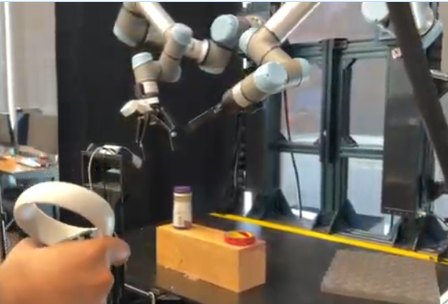

Washington Embodied Intelligence and Robotics Development Lab (WEIRD Lab)
Robotics & RL Research

Overview
Research in embodied AI, robotics, and reinforcement learning—including teleoperation and imitation learning for dexterous manipulation.